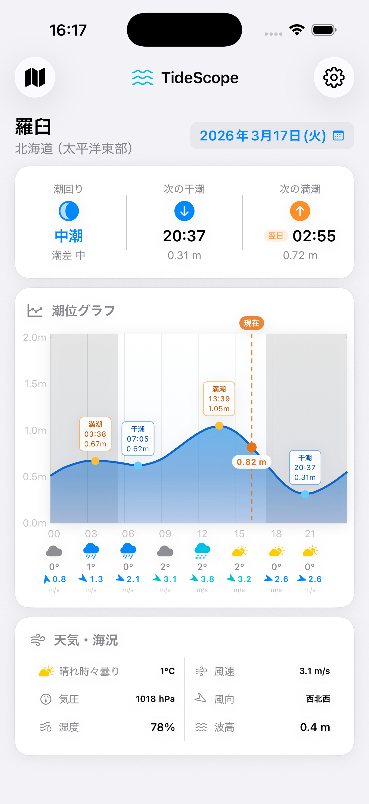
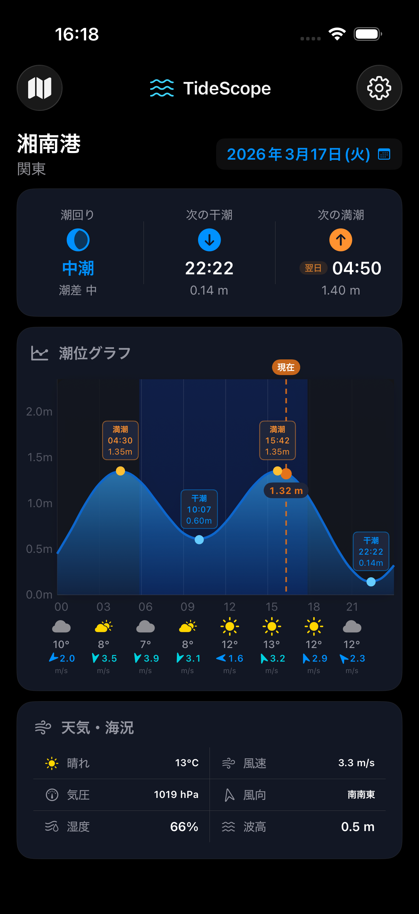
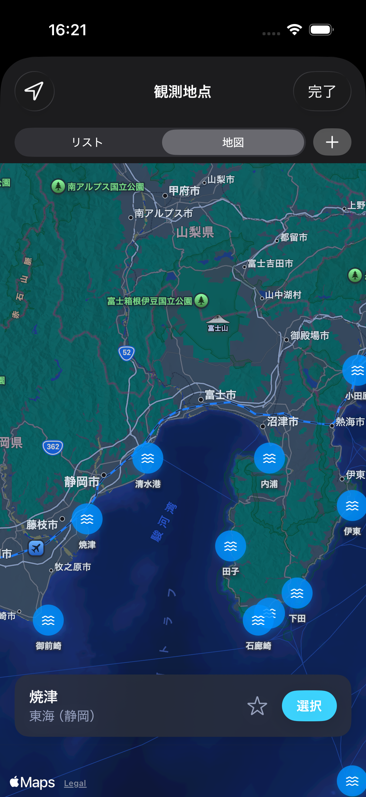
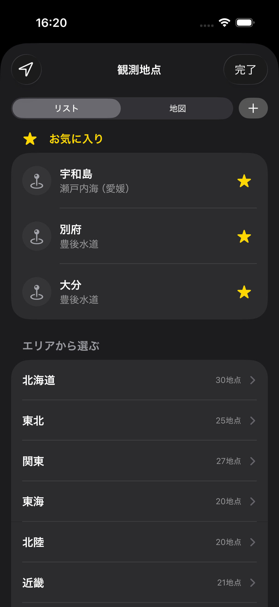
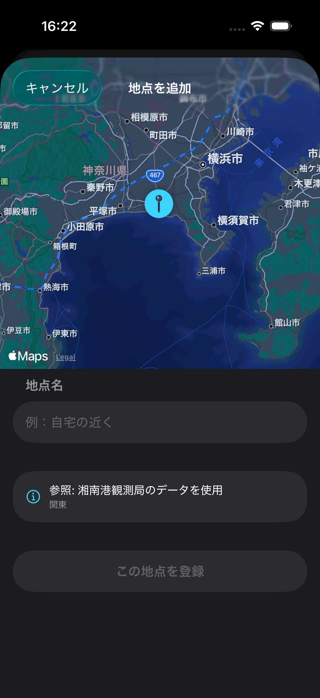
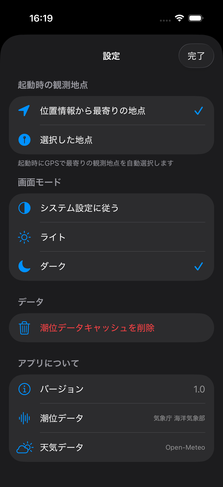
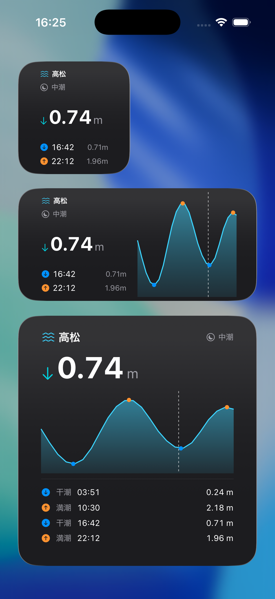
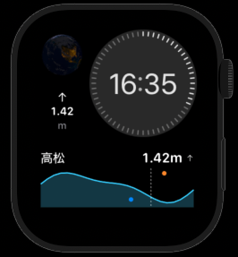

Features
潮位情報を、手のひらに
気象庁の全国238観測局のリアルタイムデータをもとに、釣りやマリンスポーツに必要な情報をまとめて確認できます。
リアルタイム潮位
現在の潮位を毎分更新。本日の満潮・干潮時刻と潮位高さを一目で確認できます。
全国238観測地点
気象庁の全観測局に対応。GPS で最寄り地点を自動選択、お気に入り登録も可能です。
潮位グラフ
3時間ごとの潮位グラフに天気・気温・風速を重ねて表示。海況を一覧できます。
潮回り表示
大潮・中潮・小潮・長潮・若潮を表示。釣りや海のアクティビティの計画に役立ちます。
Apple Watch 対応
手首で素早く潮位を確認。iPhone を取り出さずにその場で現在の潮位をチェックできます。
ウィジェット対応
ホーム画面やロック画面にウィジェットを配置して、アプリを開かずに潮位を確認できます。
Screenshots
スクリーンショット


メイン画面
リアルタイム潮位・満干潮時刻・潮回り・天気を一目で確認。ライト／ダークモード対応。

地図で地点選択
全国238の観測地点を地図上で一覧し、目的の地点を選択できます。

お気に入り
よく使う観測地点を登録して、すばやくアクセスできます。

カスタマイズ
他の観測地点データから自分だけの観測地点を作成できます。

設定画面
起動時デフォルト地点や画面モードの設定ができます。

ウィジェット
ホーム画面やロック画面にウィジェットを配置して、アプリを開かずに潮位を確認。

Apple Watch
手首で素早く潮位を確認できます。
Requirements
動作環境
- OSiOS 16.0 以降
- 対応デバイスiPhone · Apple Watch
- 価格無料
- データ気象庁・Open-Meteo